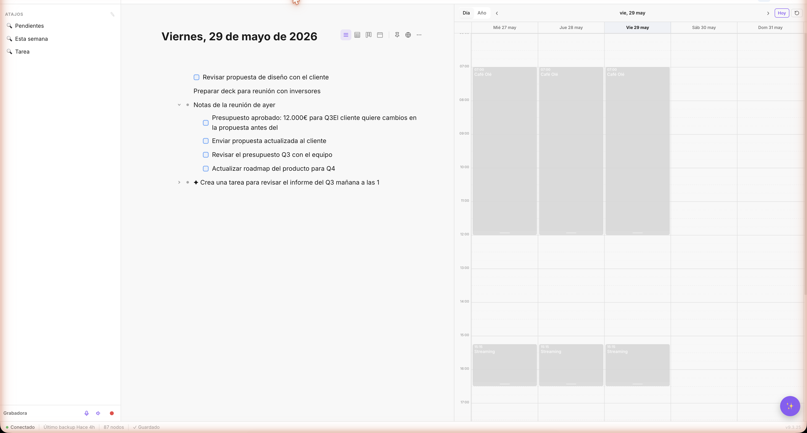
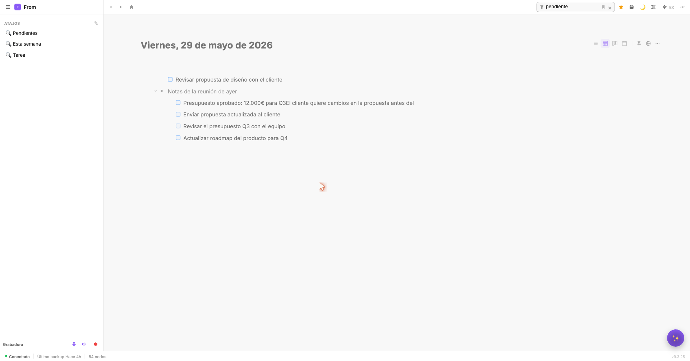
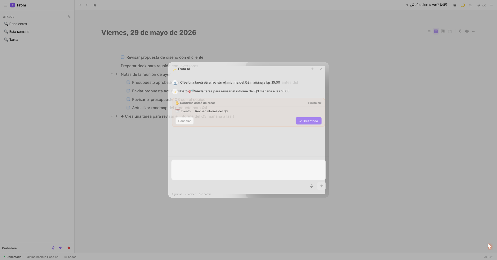
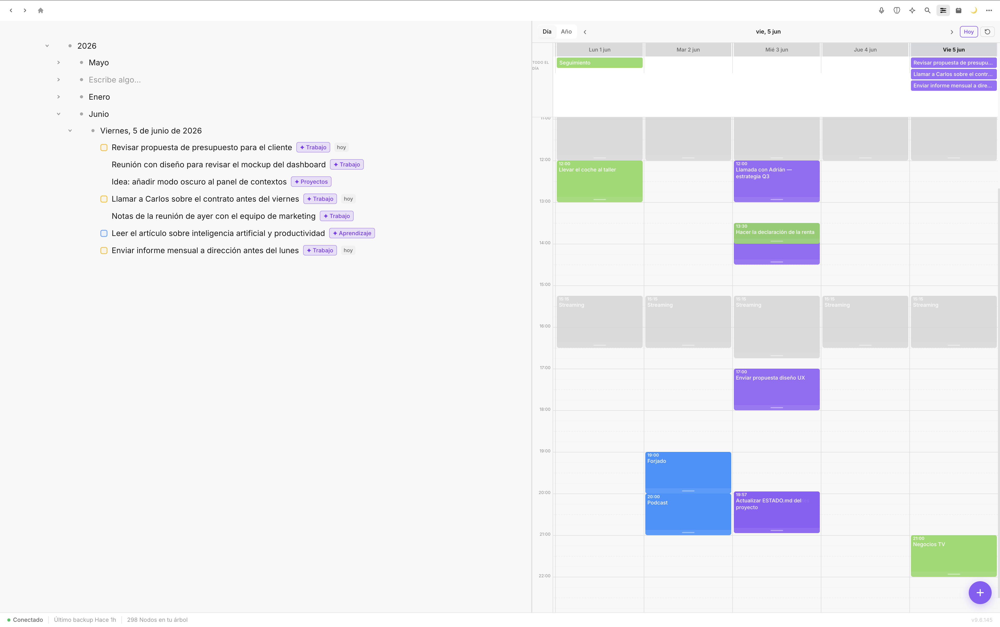
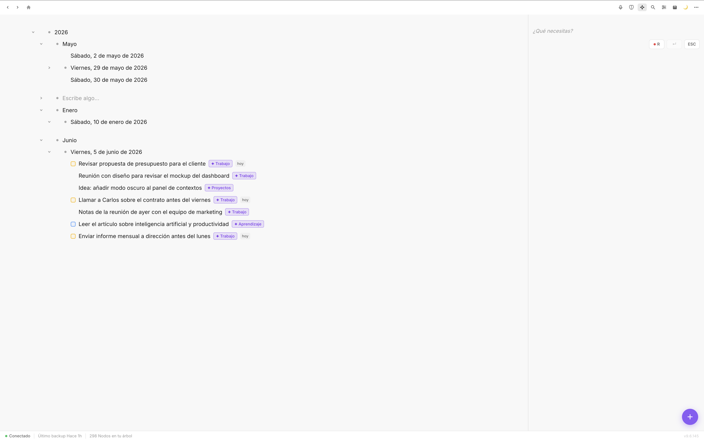
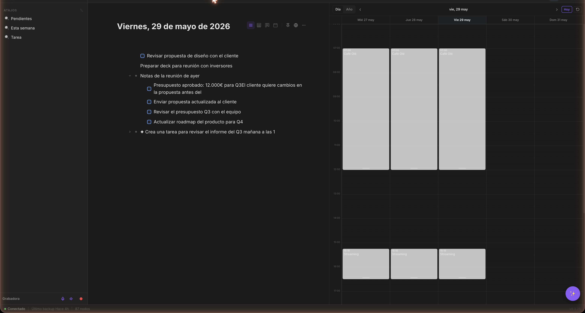

Write the way you think. Fromly understands whether it's a task, an event or a note, dates it, files it under the right context and remembers who you are — without you touching a single menu. It's not AI on top of your notes: it's a layer that removes the friction between what you think and what gets written. And it's fast.
Web · Mac · iPhone · Free to start · No credit card





Forget folders, menus and systems you have to maintain yourself. In Fromly you just write and that's it: it understands what you put down, organizes it on its own and syncs it instantly. Faster than writing a note on paper. And on top of that, it understands you.
The speed of Workflowy. The power of Notion. Nest, move, reorganize. All in a tree that never slows you down.
Automatic local backup every 2 hours in standard Markdown. Even if you close your account tomorrow, your notes stay on your Mac. No lock-in, no fear.
Write on Mac, open iPhone: it's already there. Fromly's private server. Zero dependency on iCloud Drive. Seconds of latency, always.
You write "lunch with Marina tomorrow" and Fromly understands it's an event, dates it and files it under the right context — without you touching a menu. It learns from what you write, remembers who you are and anticipates. Magic isn't a chatbot on top of your notes: it's a layer that removes the friction between what you think and what gets written.
As you type, Fromly detects whether it's a task, an event or a note, dates it if you mention a date and places it in the right context. You write in plain language; Fromly does the rest. No menus, no friction.
Fromly suggests the next step as you type: the likely date, the context, whether this is a task. Press Tab and it's applied. Predictions that learn from how you work — not generic templates.
Fromly builds a profile of you from what you write: your projects, the people in your life, your goals. It keeps only what lasts — not the noise of the day. When you ask for something, it already knows what you mean.
Fromly learns on its own. Every note you write feeds an intelligence layer that orders, remembers and connects — in the background, with nothing for you to maintain.
Fromly classifies every note into the context it belongs to — work, family, a specific project — understanding the hierarchy. If a new context is needed, it creates one. Your tree organizes itself as you write.
Each context builds up its own knowledge: the key people, the recurring topics, the words you use. Fromly extracts it on its own and keeps it current as you add things. Open a context and Fromly already knows what it's about.
Right-click any node → Teach Magic. "This isn't a task", "this goes in this context". Fromly learns from the correction and applies it from then on. Your assistant, calibrated by you.
Magic Chat — conversation window
Smart filter — pending tasks view
Meeting recorder
Activate the long recorder from the sidebar for meetings, classes or long notes. When you stop, Magic analyzes the audio and creates in your journal: an executive summary, full transcript and extracted task list. All as nodes, editable from the first second.
Scheduled agents
Configure an agent in your tree and set its schedule: daily at 08:00, weekly on Mondays. The server runs the agent automatically and writes the result to your journal. When you open the app, it's already done.
Fromly is available on web, Mac and iPhone. The same power across all your devices. Capture ideas in 3 seconds, check your notes anywhere and keep sync instant.
Type your idea and add inline shortcuts instantly: -t for task, -p:high for high priority, -d:tomorrow for a date. No menus, no friction.
Every day, Fromly creates your journal node automatically. The same content on web, Mac and iPhone, synced. Open the app or browser and start writing — context is already there.
Overdue tasks, today's tasks and active loops visible at a glance. Mark done by swiping, reschedule by tapping. Your to-do list always in sync.
Sync doesn't depend on iCloud Drive or any external service. Every change propagates via Fromly's private server to web, Mac and iPhone with minimal latency. Reliable, fast and yours.
The intelligent notes revolution, on all your devices. Open from the browser, download for Mac or open on iPhone: your tree is already waiting.
Fromly is not another notes app. It's the system you've been looking for: fast, smart, cross-platform and with your data under your control.
Fromly's AI knows your notes. Ask it to organize your week and it does. Ask about a project and it summarizes what you wrote three months ago. It edits your bullets directly. It's not ChatGPT with a note on top — it's something else entirely.
Write fast, nest without limit, reorganize with drag & drop. Use / for tasks, views, headings. Zoom into any bullet to focus. Workflowy's speed with the power of a modern app.
Web, Mac and iPhone synced instantly. No iCloud Drive, no waiting, nothing to configure. Write on your computer in the morning, check on iPhone in the afternoon. Same thing, real time.
Fromly saves a complete copy of your notes on your Mac every 2 hours, in standard Markdown that any editor can open. The cloud can fail — your disk doesn't lie. Your data is yours, full stop.
Use @tags to link notes across contexts. Filter by type, area, date or status in one click. Semantic AI search that answers real questions about your knowledge base.
Year → Month → Week → Day structure. Tasks with dates, automatic journal, visual timeline with your Apple Calendar events. Past and future in the same tree, without switching apps.
Fromly in action
Smart filter
Outliner
Panels
Task management
✦ Magic AI
Planner
Context menu
Onboarding
We're not afraid of comparisons. Use it to decide.
| Fromly | Notion | Workflowy | Obsidian | |
|---|---|---|---|---|
| Capture speed | ⚡ Instant | Slow (Electron) | Fast | Fast |
| Real contextual AI | ✓ Knows your notes | Basic (no context) | None | Paid plugins |
| Automatic local backup | ✓ Every 2 hours | No | No | Yes (local files) |
| Web + Mac + iPhone | ✓ All three | Yes | Yes | No native sync |
| Sync without iCloud Drive | ✓ Own server | Yes (own cloud) | Yes | Requires plugin/iCloud |
| Price to start | Free | Free (limited) | Free (limited) | Free |
| Native Mac app (not Electron) | ✓ Tauri (Rust) | Electron | Web app | Electron |
Fromly syncs in real time via a private server. Open the app on web, Mac or iPhone and your nodes are already there. No iCloud Drive, no extra configuration.
Every node change propagates instantly to all your devices. Private cloud server, minimal latency, always up to date.
Connect multiple Google accounts. Link notes to Google Docs with automatic two-way sync. Your Google docs as context for AI.
Your data is stored on Cloudflare R2. Full local backup every 2 hours in standard Markdown. Export any time — no lock-in.
Full outliner — year, month and day hierarchy with tasks, notes and events
Tasks view + integrated weekly planner
Drag the divider to compare light and dark mode. Same design, always clean.

Fromly integrates natively with the Apple and Google apps that are already part of your day. No plugins, no complex setup.
Your events appear in Fromly's timeline. Create events from notes. Two-way sync.
Fromly tasks sync with Apple Reminders. Complete from any device.
Browse, search and link Drive files. Multi-account. Access your folders without leaving Fromly.
Link notes to Google Docs. Edit on one side and it syncs to the other. Auto-sync on save.
Fromly for iPhone syncs your tree in real time. The web app works from any browser. Capture, check and edit from anywhere.
Choose your preferred AI provider. Use your own API key or Fromly's managed AI with included tokens.
Fromly agents run on their own, on the schedule you configure, and write results to your journal. No need to open the app — when you arrive in the morning, it's already done.
Ask "what's the status of project X?" and Fromly searches your tree, retrieves the relevant fragments and answers with real context. It doesn't hallucinate — it works with what you've written.
Select a block, type "summarize this in three points" and the AI rewrites the bullet. Preview the changes before accepting. It doesn't generate text in a side panel — it operates where you work.
Configure an agent with its schedule: daily at 08:00, weekly on Mondays. The server runs it automatically and writes the result to your journal. Your automated routines, no intervention needed.
Choose Claude, GPT or Gemini. Use Fromly's managed AI or your own API key. Only the relevant fragment travels to the model. Nobody trains on your notes.
Real example
"Summarize Tuesday's meeting notes and extract the tasks with dates."
→ Fromly reads your Tuesday journal, creates 4 dated tasks and puts the summary in the parent bullet. No copy-pasting.
Real example
"What did I decide about the redesign project?"
→ Fromly searches weeks of notes, finds the exact bullet where you made the decision and cites it with the date.
Real example
"Organize my week based on high-priority tasks."
→ The overnight agent reviews your backlog and distributes tasks by day before you open the app in the morning.
Magic Chat — writing a natural language instruction
Journal calendar view — May 2026
Fromly does not sell or share your data. Your tree is yours. The server exists to sync, not to read your content.
Your tree syncs via Fromly's private server. Attachments are stored on Cloudflare R2, encrypted and only accessible by you.
We don't track usage, don't send analytics, don't collect behavioral data. Zero. What you do in Fromly stays in Fromly.
Your content is exportable at any time. If you leave Fromly, you take everything with you. No proprietary formats with no exit.
Fromly saves a complete snapshot of your notes on your Mac every 2 hours. Standard Markdown, readable with any editor. Restore any moment from the last 12h from Settings. Your tree also lives on the private server, accessible from web and iPhone.
Open the browser at getfrom.app/app, install the app on Mac or download it on iPhone. No complex setup, no mandatory iCloud.
Name your first workspace and start adding nodes. Fromly syncs automatically with all your devices.
Create nodes, organize projects, schedule tasks. AI already knows your context from minute one.
Lifetime license to use Fromly forever. Optional subscription only if you want managed AI without configuring API keys.
Fromly is available on web (getfrom.app/app), macOS and iPhone — all synced in real time. What you write on any device appears instantly on the others. You can start right now from the browser, without downloading anything.
Fromly offers native apps for Mac and iPhone (pure Swift, not Electron) and a modern web app, syncs in real time via its own server without depending on iCloud Drive, has integrated contextual AI that knows your notes, and combines outliner + tasks + journal + agents in one app. It's not a Swiss army knife — it's a tool designed to flow.
Fromly uses a private server to sync your tree in real time. Every change propagates in seconds to all your devices. It doesn't depend on iCloud Drive or any external service. Attachments are stored on Cloudflare R2.
Magic is the AI assistant built into Fromly. Hold R to record by voice or press Space to type. Magic understands your notes, creates nodes in your journal and can learn from your corrections ("Teach Magic"). It also includes a long recorder for meetings and scheduled agents that work on their own.
Fromly indexes your node tree and retrieves relevant context when you interact with AI. Only the necessary fragment travels to the API — nothing is shared with third parties. You can choose between Claude, GPT or Gemini, or use Fromly's managed AI.
Export everything at any time. Fromly doesn't hold you: your data is yours and you can take it with you. Automatic local backup every 2 hours in standard Markdown.
Yes. Fromly imports from Obsidian, Notion, LogSeq, NotePlan, Bear and any Markdown folder. Notes without dates go to yesterday's journal; dated tasks automatically go to their corresponding day. See the Manual for instructions per app.
Not necessarily. You can use Fromly's managed AI (with subscription) or bring your own API key from Anthropic, OpenAI or Google. You can also connect your Claude subscription directly.
Your data is stored on Fromly's private servers and Cloudflare R2, with encryption in transit and at rest. No telemetry, no analytics, no data selling.
Ultra-fast outliner, Magic AI with voice, agents that work on their own and real sync on Web, Mac and iPhone. Your notes always with you and your privacy always protected. Free to start — no card, no tricks.